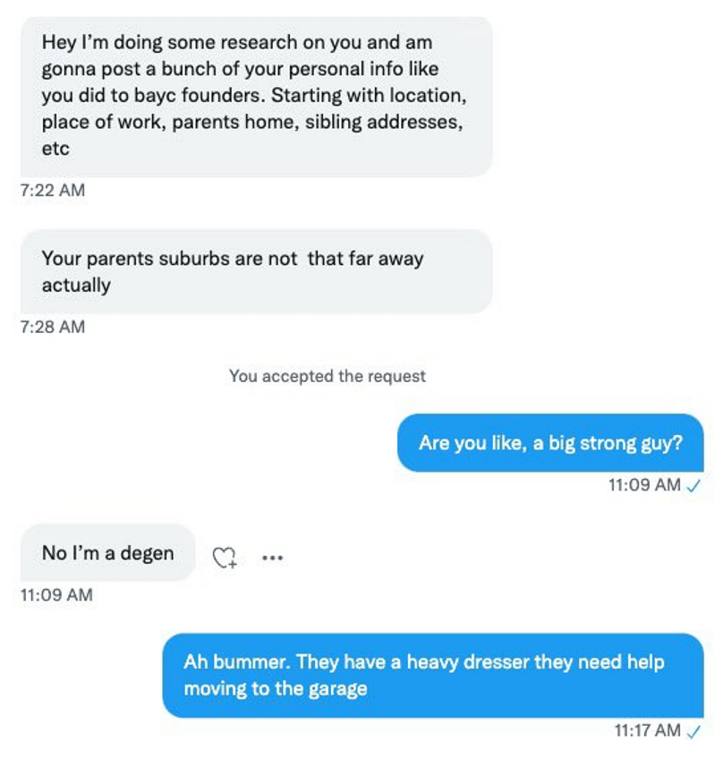
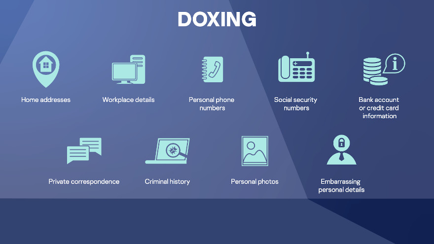

De acuerdo con la consultora Kasperky, el doxing consiste en la divulgación del nombre, dirección, lugar de trabajo, teléfono, datos financieros de una persona sin su consentimiento.
El término “doxing” es la abreviación de “exponer dox”, siendo “dox” un término coloquial para referirse a los documentos. Por lo general, el doxing es una acción maliciosa que un hacker realiza contra personas con las que está en desacuerdo o que considera desagradables..
¿Qué tan riesgoso puede ser tener mis cuentas de redes sociales configuradas en modo público?¿O etiquetar el restaurante donde estoy teniendo esa deliciosa comida? ¡Casi todos lo hacen!
Qué es el doxing
El término proviene de la abreviatura “docs” que en inglés se refiere a documentos, en referencia a los archivos filtrados en línea que contienen la información personal de la víctima. En última instancia, los criminales buscan a través de la publicación de información personal asustar, avergonzar y crear una enorme angustia, a veces exigiendo dinero a sus víctimas, otras veces por pura venganza o un sentido personal de justicia.
El dóxing es una práctica que incluso comenzó a ser utilizada por cibercriminales en ataques de ransomware. En 2019 algunos grupos de ransomware no solo infectaban con malware a sus víctimas que secuestraban todos los archivos, sino que comenzaron a robar información de sus víctimas antes de bloquear el acceso a la información. De esta manera, los cibercriminales comenzaron a presionar a las organizaciones para que paguen o de lo contrario publicarían la información privada de manera pública.
¡Nada que esconder!
Como regla básica, muchos de nosotros ya somos cautelosos cuando se trata de proteger nuestra información básica en las redes sociales. Detalles como los números de teléfono o las direcciones de las casas a menudo se mantienen privados. Pero, ¿qué sucede con toda la otra información? ¿La ciudad donde vivimos?¿Dónde trabajamos? Todos estos son detalles que compartimos voluntariamente con el público.
Y tal vez puedes pensar, “¿Y qué?¡No tengo nada que ocultar!”. Ya que tendemos a considerar que nuestra existencia es definitivamente menos interesante que la vida de una celebridad. No obstante, lo que no tenemos en cuenta es que para alguien que quiere intimidarnos o extorsionarnos, ese no es realmente el punto.
Cualquier persona puede ser víctima del doxing
La razón por la que el doxing es un peligro tan retorcido es porque todos podemos ser víctimas de esta práctica. Y si bien nos corresponde a cada uno de nosotros definir a nuestra audiencia y ajustar nuestra configuración de privacidad en las redes sociales, no podemos evitar todas las acciones que llevan adelante personas con malas intenciones, algunas de las cuales incluso filtran información de otras personas solo por aburrimiento.
En los últimos años, sin embargo, el doxing ha adquirido un nuevo propósito. Se ha convertido en una herramienta de presión social sobre los individuos, exponiendo lo que las personas que perpetran el doxing cree que son las malas acciones de su víctima y el daño social.
En julio de 2022, un médico austríaco que regularmente daba entrevistas sobre la necesidad de vacunas contra la COVID-19 decidió acabar con su vida debido a la intimidación constante que recibía de personas que creían que la pandemia era un engaño. Anteriormente, el medico había sido confrontado en su lugar de trabajo por manifestantes que también le habían enviado amenazas de muerte. La divulgación pública de su información personal dio lugar a nuevas amenazas, incluso de personas fuera de Austria.
Hacer doxing y ser víctima de doxing
En febrero de 2022, en un extenso artículo sobre “responsabilidad en la era cripto”, BuzzFeed News expuso deliberadamente las identidades de los dos creadores de Bored Ape Yacht Club. El sitio web de noticias “buscó en los registros de negocios públicos para revelar las identidades de los dos fundadores principales”, cuyos nombres, edades, profesiones, ubicación y también la información antigua disponible en la web, ahora están disponibles para cualquiera.
La periodista fue amenazada con doxing en represalia por su artículo. En última instancia, el artículo generó una importante discusión sobre los límites entre el periodismo de investigación y el doxing, una discusión relevante ya que incluso los mismos periodistas son víctimas de doxing y, en consecuencia, de grandes niveles de acoso que incluso hasta amenazan sus vida..

Las generaciones más jóvenes en riesgo
El doxing está tan extendido y profundamente arraigado en el mundo en línea que se puede confundir fácilmente con otros tipos de violencia digital. Además, cuanto más tiempo pasan en línea las personas, más vulnerables se vuelven. Este es el caso de la Generación Z y la Generación Alfa.
El doxing puede comenzar a raíz de un simple desacuerdo o rivalidad en un videojuego online y puede provocar una enorme carga emocional a través del miedo a sus consecuencias y la vergüenza generada, principalmente si se trata de niños. Plataformas como Twitch, Steam, Discord y Roblox pueden dar una falsa sensación de seguridad, ya que la mayoría de las interacciones ocurren entre los ID (nombres de usuario) y avatares de los jugadores. Sin embargo, los pequeños detalles son suficientes para que determinados usuarios puedan obtener información personal, por ejemplo, buscando un ID de usuario específico en Twitter, donde pueden encontrar más información personal y una lista de amigos.

¿Se puede evitar ser víctima del doxing?
No hay una manera sencilla de responder a esta pregunta. En última instancia, si no tienes ninguna información en línea, será muy difícil para alguien encontrar algo sobre ti. Pero incluso si eres un usuario de internet típico -y en caso de que alguien realmente quiera filtrar tus datos personales por cualquier razón- lo más probable es que ya hayas compartido lo suficiente. Afortunadamente, hay algunas formas en las que puedes hacer que sea más difícil para cualquier recopilar información sobre ti:
Limpia tu presencia en línea.
No compartas (más) ninguna información personal en línea.
Utiliza la autenticación de dos pasos o multi factor en todas tus cuentas.
Asegúrate de que tus videoconferencias y llamadas sean privadas y encriptadas.
No abras enlaces antes de asegurarte de que fueron enviados intencionalmente y por alguien que conoces.
Qué hacer si eres víctima de doxing
En primer lugar, no te culpes por las intenciones maliciosas de los demás. Ten en cuenta que todos estamos en riesgo.
Reportar y bloquear a la persona acosadora a través de las herramientas disponibles en la plataforma donde se está produciendo el hecho.
consideres que pueden llegar a ser relevantes para respaldar tu caso.
Toma capturas de pantalla de todos los detalles que Asegúrate de que todas tus cuentas de redes sociales son privadas; considera la posibilidad de ponerlas en pausa por un tiempo.
Avisa a tus amigos o familiares para que estén al tanto de lo que está sucediendo, principalmente si la dirección de tu casa o trabajo ha sido expuesta.
El doxing es serio, y puede ser una herramienta que arruina la vida, especialmente en un mundo donde, a pesar de estar todos interconectados, estamos cada vez más divididos por la opinión. Exponer los datos personales de las personales de las personas puede convertirse, con el tiempo, en un juego de ping-pong donde todos seremos afectados.
Fuentes.
https://www.welivesecurity.com/la-es/2022/09/16/que-es-doxing/
https://www.keepersecurity.com/blog/es/2023/05/26/what-is-doxxing/